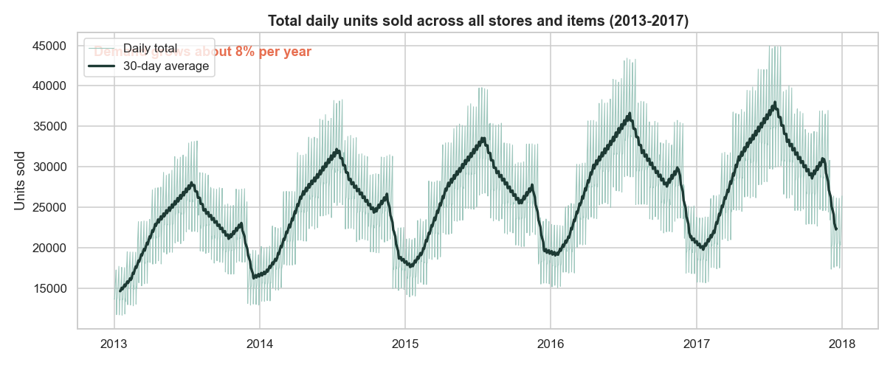
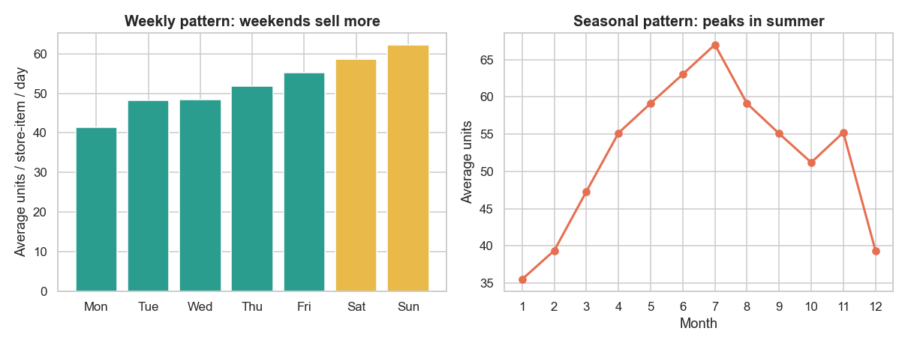
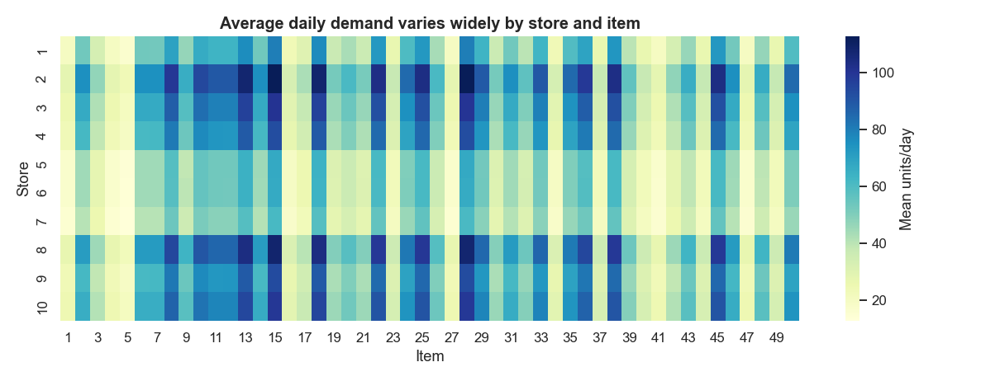
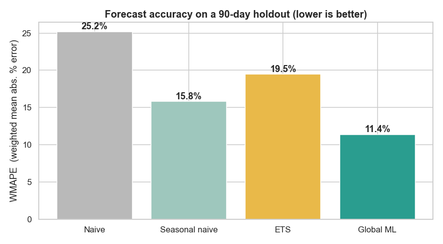
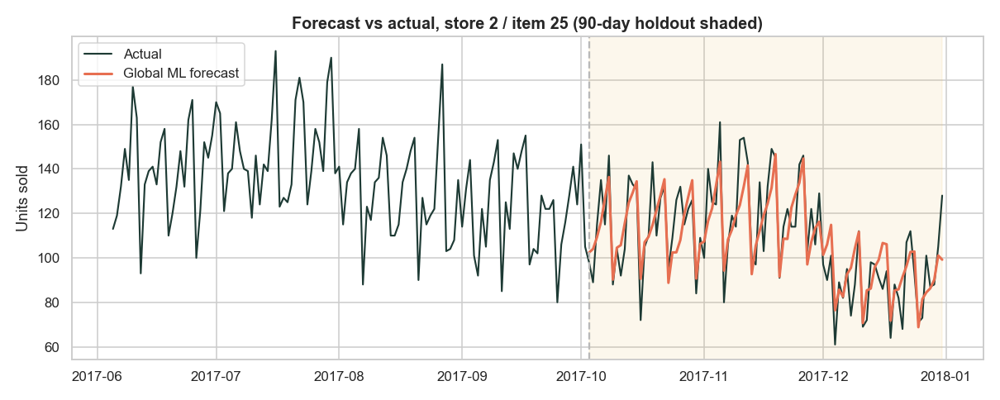
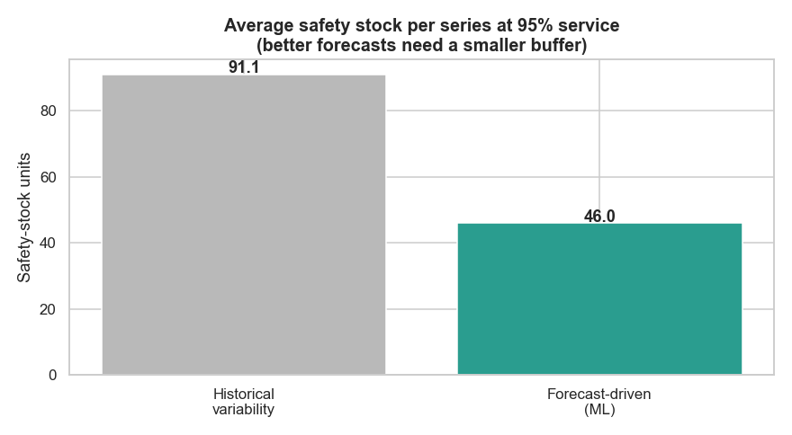
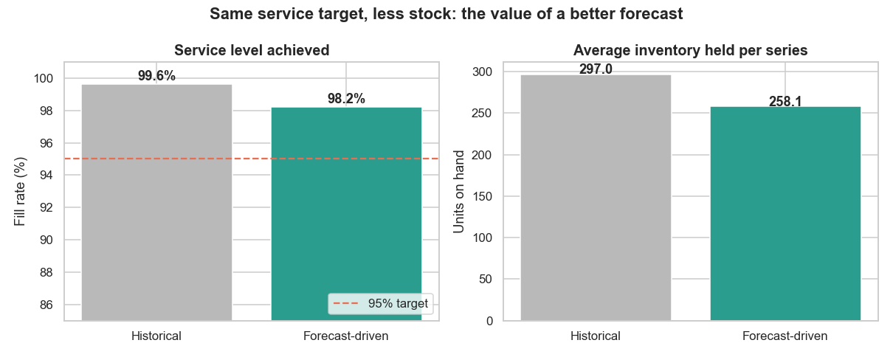
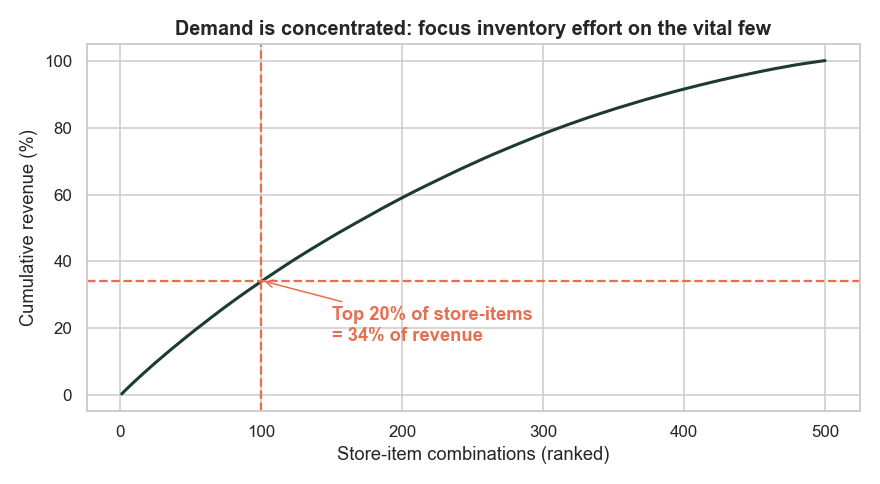

913k
daily sales records (2013-2017)
11.4%
forecast error (WMAPE), 90-day test
-13%
inventory at the same service
The business problem
Every retailer faces the same tension. Hold too little stock and you get
stockouts: lost sales and frustrated customers. Hold too much and you tie
up cash, fill the warehouse and risk markdowns and waste. Getting this
right depends on one thing above all: how accurately you can predict
demand, and how well that prediction is turned into reorder decisions.
Using a real public dataset of five years of daily sales for 10 stores
and 50 items (913,000 records), this project does three things: it
learns the demand patterns, it builds and tests a forecasting model against
strong benchmarks, and it converts the forecast into an inventory policy
whose value is measured in a simulation.
1How demand behaves

What this shows. Total units sold every day across the
whole network, with a 30-day average over it. Demand rises steadily, about
7.8% per year, with a strong repeating annual wave.
What it means. A forecast cannot just repeat last
week. It has to capture the upward trend and the yearly seasonal shape, or
it will run low in the busy season and overstock in the quiet one.

What this shows. The average day-of-week pattern (left)
and month-of-year pattern (right). Weekends sell about 23% more than
weekdays, and demand peaks in the summer (July).
What it means. These two rhythms, weekly and
yearly, are the backbone of the forecast. Staffing and deliveries should
lean into weekends and the summer peak.

What this shows. Average daily demand for every
store-item pair. Some items and stores sell many times more than others
(the busiest store sells about 1.8 times the quietest).
What it means. A single blanket stocking rule
would be wrong almost everywhere. Each of the 500 series needs its own
forecast and its own buffer.
2Forecasting: testing four models honestly
To know a forecast is good you must test it on data it has never seen. I held
out the last 90 days and compared four approaches, from simple to
advanced. All features used by the machine-learning model are at least 90
days old, so it never peeks into the period it is predicting.

What this shows. The error of each model on the unseen
90 days, measured by WMAPE (weighted mean absolute percentage error, lower
is better). Naive repeats the last value; seasonal naive
repeats the value from a year ago; ETS is a classical
trend-plus-seasonality model; Global ML is a single gradient-boosting
model trained across all 500 series with calendar and lag features.
What it means. The machine-learning model wins
clearly at 11.4% error, about 28% more accurate than the strong
seasonal-naive benchmark. Learning from all series at once lets it borrow
patterns that a single-series model misses.

What this shows. One store-item over the final months.
The shaded area is the 90-day test window the model never saw; the orange
line is its forecast against the real sales in black.
What it means. The model tracks both the weekly
up-and-down and the December slowdown, not just the average level. That
day-level accuracy is what makes the inventory step below possible.
3From forecast to inventory decisions
A forecast only creates value when it changes a decision. I convert each
forecast into a weekly order-up-to policy: every week, top each
store-item back up to a level that covers expected demand over the
reorder cycle plus a safety stock buffer sized for a 95% service
target. The size of that buffer depends directly on how uncertain the
forecast is.

What this shows. The average safety-stock buffer needed
per store-item to hit 95% service. The grey bar sizes the buffer from raw
historical demand swings; the teal bar sizes it from the machine-learning
forecast error instead.
What it means. Because the model already explains
the weekly and seasonal swings, the leftover uncertainty is far smaller, so
the buffer can be roughly half the size for the same service promise.

What this shows. A day-by-day simulation of the weekly
reorder policy across all 500 store-items over the 90-day test period, run
two ways: stocking from historical variability (grey) versus from the
forecast (teal). Left is the service level actually achieved; right is the
average inventory held.
What it means. Both policies clear the 95% target,
but the forecast-driven policy does it with 13% less inventory on hand.
The historical policy reaches 99.6% only by overstocking, capital that earns
nothing. Same promise to the customer, far less cash frozen on shelves.

What this shows. The cumulative share of revenue when
store-items are ranked from busiest to quietest.
What it means. The top 20% of store-items drive
about 34% of revenue. Forecasting and buffering effort should be tightest on
this vital few, where errors cost the most.
Recommendations
1. Adopt the machine-learning forecast for replenishment.
At 11.4% error it is about 28% more accurate than the current-practice
benchmark, and it scales to all 500 series from one model.
2. Re-size safety stock from forecast error, not raw
demand swings. This roughly halves the buffer and cuts inventory about
13% while still meeting the 95% service target, freeing working capital.
3. Differentiate by importance. Hold the tightest
service and the closest monitoring on the top 20% of store-items that drive
a third of revenue; relax slightly on the long tail.
4. Validate live before full rollout. Pilot on a
sample of stores, track realised service and inventory for a quarter, then
scale. Re-train the model regularly as demand shifts.
Method and honest limitations
- Data. Store Item Demand Forecasting Challenge (Kaggle), a real,
public dataset: 10 stores, 50 items, daily sales 2013-2017, no missing values.
- Forecasting. A global
HistGradientBoostingRegressor
with calendar features and lags of 90 days or more (so it never leaks the
future), benchmarked against naive, seasonal-naive and ETS on a 90-day holdout.
- Inventory. Periodic-review order-up-to policy, 7-day lead time,
95% target service, evaluated in a day-by-day reorder simulation.
- Assumptions. The cost figures use an assumed unit cost, holding
rate and order cost; the percentage improvements (accuracy, safety stock,
inventory) do not depend on those assumptions. Lead time is treated as
fixed; real lead-time variability would call for a slightly larger buffer.